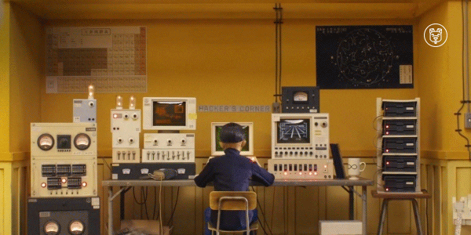
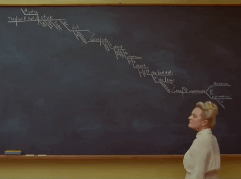
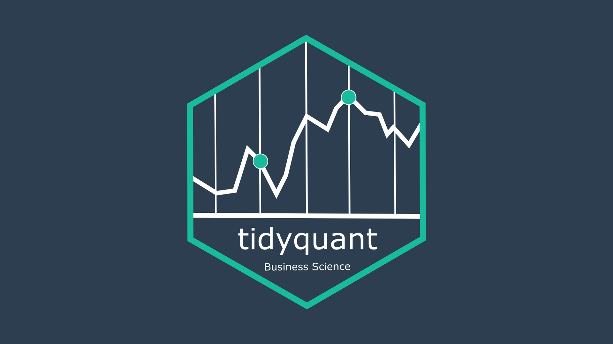
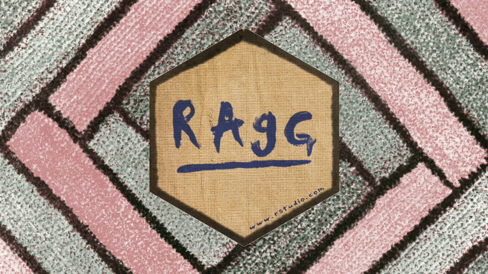
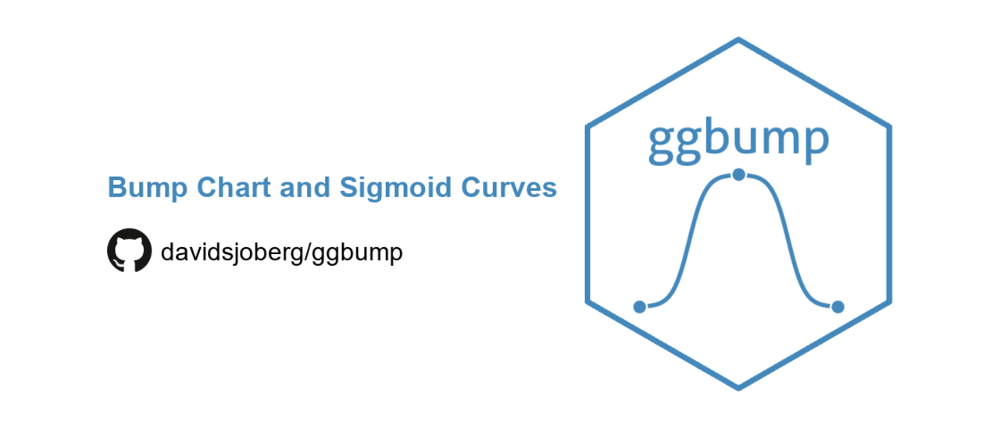
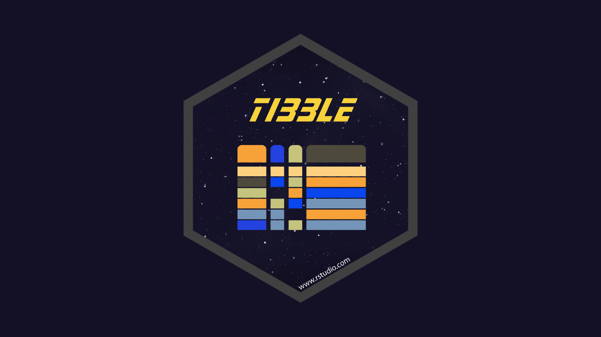

🍊오렌지맨숀
POSTS
NEWS
DIARY
ABOUT
Categories
All
(12)
GNN
(4)
GRAPH
(3)
Quant
(1)
Quarto
(1)
R
(1)
R Markdown
(1)
R package
(6)
Ragg
(1)
TRANSLATION
(3)
Visualization
(1)
YAML
(1)
ggbump
(1)
palmerpenguins
(1)
purrr
(1)
tibble
(1)
tidyquant
(1)
POSTS ✏️
Hands-on DATAVIZ + ML + DL
Order By
Default
Title
Date - Oldest
Date - Newest
r에서 Spinner로 만드는 Graph Net
R package
GNN
R아두면 쓸데있는 패키지 이야기 05 Spinner package
2023/04/03
4 min
그래프 신경망
GNN
GRAPH
TRANSLATION
[번역] A Gentle Introduction to Graph Neural Networks ③
2023/04/01
6 min

그래프 데이터로 풀 수 있는 문제
GNN
GRAPH
TRANSLATION
[번역] A Gentle Introduction to Graph Neural Networks ②
2023/03/17
4 min

그래프는 세상 어디에나 있다
GNN
GRAPH
TRANSLATION
[번역] A Gentle Introduction to Graph Neural Networks ①
2023/03/16
6 min
뜯어먹는 Quarto ①YAML
R Markdown
Quarto
YAML
YAML Ain’t Markup Language
2023/01/08
9 min
pure function과 친해지려면 purrr 합시다
R package
purrr
R아두면 쓸데있는 패키지 이야기 05 purrr package
2023/01/01
4 min

내가 원하는 주식 종목 정보 한번에 불러오기
Quant
tidyquant
R고보면 쉬운 퀀트 분석 01 주식정보 불러오기
2022/09/18
6 min

한글 폰트 깨짐 현상 Ragg package로 부셔드림
R package
Ragg
R아두면 쓸데있는 패키지 이야기 04 Ragg package
2022/09/04
3 min
iris 대신 penguins package 씁시다
R package
palmerpenguins
R아두면 쓸데있는 패키지 이야기 03 palmerpenguins package
2022/05/27
4 min
득표율을 한 눈에! 득표율 지도 시각화
R
Visualization
geofacet package로 대한민국 카토그램 만들기
2022/03/20
5 min

bump chart를 그리고 싶을 때, ggbump package
R package
ggbump
R아두면 쓸데있는 패키지 이야기 02 ggbump package
2022/02/20
6 min

data frame의 진화, tibble package
R package
tibble
R아두면 쓸데있는 패키지 이야기 01 tibble package
2021/05/02
4 min
No matching items